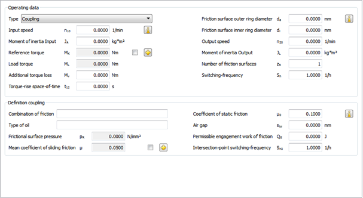
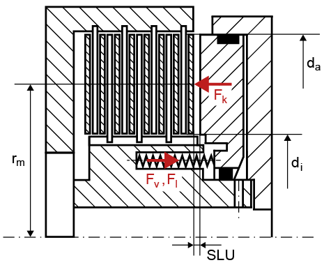
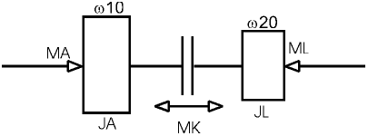

|
|
|


摩擦离合器
此模块用于根据 VDI 2241 [106] 计算摩擦离合器和制动器。该计算结果可用于选择合适的离合器或制动器。离合器可通过机械、电磁或压力（例如液压）方式操作，从而产生或消除压紧力。离合器可设计为干式运行或带润滑运行。这会对滑动摩擦系数和静摩擦系数产生显著影响。

图55.1：基本数据：摩擦离合器

图55.2：闭合系统的视图
力存储在弹簧中。当弹簧释放时，力使离合器回到其开启状态，反之亦然。这里通常使用压缩弹簧或碟形弹簧。两种类型的弹簧在开启状态下都已预紧。在此闭合系统的示例中，压缩力由液压产生，因此作用于活塞。这种力存储的额外定义未包含在 VDI 指南中。该指南假定摩擦表面压力直接施加在摩擦盘上。由于弹簧的动态特性也可能是非线性的，因此计算中使用与第一片摩擦盘接触所产生的力。
在 KISSsoft 中，可以定义弹簧力，或直接输入参考扭矩 MK 和负载力矩 ML。按照 VDI 2241 的规定，摩擦的啮合功和切换能力使用平均滑动速度和平均滑动摩擦系数来定义。也可以将滑动摩擦系数指定为 5 个滑动速度的函数，因为该因数会随实际滑动速度的不同而有很大变化。但这种方法未考虑油液老化，而油液老化会降低滑动摩擦系数。

图55.3：离合器的示意图
动态惯性矩 JL 也可以由多个不同参数组成。如果质量 m 位于距旋转轴距离 r 处，其惯性矩可用公式 JL2 = m·r2 计算。
这可以添加到现有的惯性矩 JL。
JL =JL1 + JL2.
然后可通过速比将惯性矩折算到离合器轴上：J2red = J2*(n2/n1)2。此折算后的惯性矩可再加到离合器轴本身的惯性矩上。
JL = JL1 + J2red
Friction couplings
This module is used to calculate friction clutches and brakes in accordance with VDI 2241 [106]. The results of this calculation can then be used to select a suitable clutch or brake. The couplings are operated either mechanically, electromagnetically, or by pressure (e.g. hydraulically), thereby either generating or removing pressing force. The couplings can be designed to run either dry or with lubrication. This has a significant effect on the coefficient of sliding friction and the coefficient of static friction.
Figure 55.1: Basic data: Friction couplings
Figure 55.2: View of a closing system
Force is stored in a spring. When the spring is released, the force returns the coupling to its open state, or vice versa. Compression or disc springs are usually used here. Both types of spring are pretensioned in their open state. In this example of a closing system, the compression is created hydraulically, and therefore affects the piston. This additional definition of force storage is not included in the VDI guideline. The guideline assumes that frictional surface pressure is applied directly to the plate. As the dynamic characteristics of the springs can also be non-linear, the force generated by the contact with the first plate is used in the calculation.
In KISSsoft, you can either define the spring forces, or input the reference torque MK and the load torque ML directly. As specified in VDI 2241, the engagement work of friction and the switching capacity are defined using an average sliding velocity and an average coefficient of sliding friction. You can also specify the coefficient of sliding friction as a dependency of 5 sliding velocities, because this coefficient can vary greatly depending on which sliding velocity is present. However, this does not take into account the aging of the oil, which would reduce the coefficient of sliding friction.
Figure 55.3: Schematic display of a coupling
The dynamic moment of inertia JL can also be made up of a number of different parameters. If a mass m is present at the distance r from the rotational axis, its moment of inertia can be calculated with the formula JL2 = m*r2.
This can then be added to the existing moment of inertia JL.
JL =JL1 + JL2.
Ratios can then reduce the moment of inertia on the clutch shaft J2red = J2*(n2/n1)2. This reduced moment of inertia can then be added to the clutch shaft's moment of inertia.
JL = JL1 + J2red